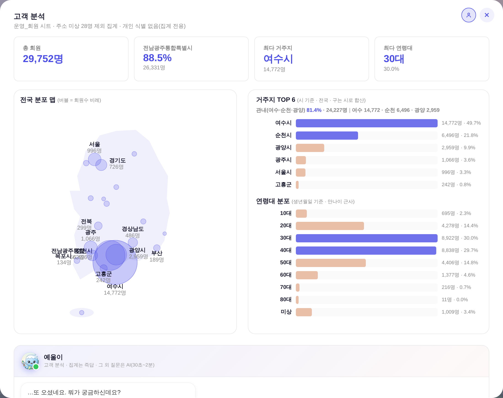
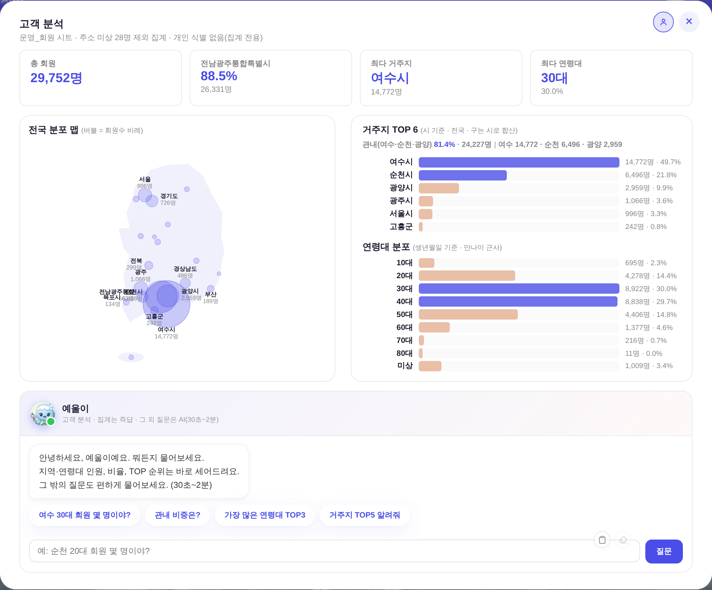
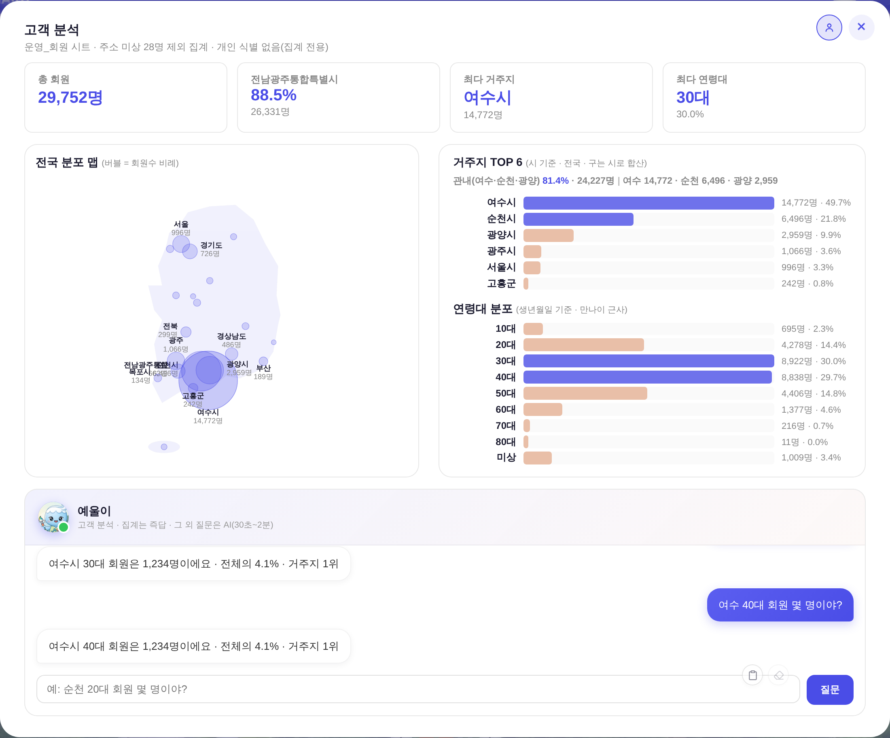

운영자 지시: 「에울이 첨부터 저렇게 츤츤거리지 않게 하고 그냥 뭐든지 물어보세요 하면됨 / 저거 스크롤 없이 한 창에 보이게 해줘. 대화 길어지면 저 네모 박스 안에서 진행하는거야. 더 넘어가지않음. 즉 저 창은 스크롤없어」
실측 = 헤드리스(1280×990 · ?qa=admin 진입로 + 회원 목데이터, 운영 스샷 분포 재현) · 전 = HEAD · 후 = 수정본, 같은 하네스
① 한 창 맞춤 — 모달 세로 스크롤 184px → 0
전 — 채팅 카드가 창 밖으로 잘림(본문 스크롤 184px)

후 — KPI·맵·막대·채팅까지 한 창에(스크롤 0)

모달 높이 88vh → 92vh(레포 전례 값) + 본문을 세로 flex로 세워 남는 높이를 맵·막대 줄이 나눠 갖는다. 막대 행은 고정 36px → 17~36px 신축(최대치 = 종전과 같은 18px 트랙·9px 간격), 맵 svg는 절대배치로 칸에 맞춰 축소(비율 유지) — 값·색·글자 무변경.
② 대화는 네모 박스 안에서만 — 8턴 쌓여도 창 기하 그대로
후 — 대화 8턴(로그 423px)이 158px 상자 안에서 스크롤

첫 인사 문구 — 츤 빼고 평범하게
전 · “…또 오셨네요. 뭐가 궁금하신데요? / 지역·연령대 인원, 비율, TOP 순위는 바로 세어드려요. / 그 밖의 질문은… 뭐, 물어보시면 생각해드릴게요. (30초~2분)”
후 · “안녕하세요, 예울이예요. 뭐든지 물어보세요. / 지역·연령대 인원, 비율, TOP 순위는 바로 세어드려요. / 그 밖의 질문도 편하게 물어보세요. (30초~2분)”
대기·답변 말투(페르소나 v3 츤데레 · 260803-4 운영자 확정)는 그대로 — 첫 화면 인사만 평범하게.
채팅 로그 = 창 높이 비례 고정칸 clamp(118px,16vh,236px)(118·236 = 종전 최소·최대 그대로). 대화가 아무리 길어져도 상자·모달 기하가 안 변하고 상자 안에서만 스크롤한다.
③ 실측(본문 scrollHeight − clientHeight)
창 높이
전 · 첫 화면
전 · 대화 8턴
후 · 첫 화면
후 · 대화 8턴
1280×1080
105px 스크롤
190px
0
0
1280×990
184px
269px
0
0
1280×900
263px
348px
24px
24px
760×900(줄바꿈 폭)
FIT 해제 = 종전 자연 흐름 그대로(렌더 HTML 대조 = 첫 인사 문구·style 선언 순서 외 차이 0)
창이 900px 이하로 낮으면 남는 24px만 스크롤(막대 행이 이미 최소 17px) — 종전 263px 대비 1/10. 좁은 폭(모달 두 카드가 줄바꿈되는 840px 미만)은 FIT을 아예 끄고 종전 레이아웃을 쓴다.
④ 안 건드린 곳
· 대시보드 책 4면(고객 분석 인라인) = 렌더 HTML 대조 차이 0 · tools/smoke_layout.mjs 1920×1080 · 1440×900 · 1280×990 전부 PASS(이젤·흰 라인 계약 유지).
· 집계 로직·수치·색 토큰·컴포넌트 = 무변경(check_design raw hex 1605/1605 동결 · :root 2블록 · 신규 토큰 0).
· 예울이 페르소나(persona/yeuli.md)·AI 라우팅·FAB 챗봇 = 무접촉.